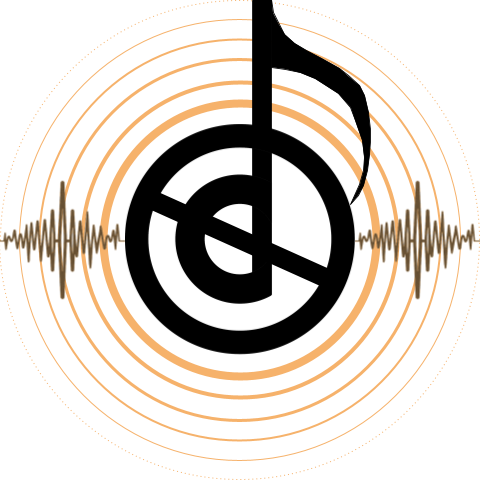

SPDMX: Large-Scale Open Stem Audio from Symbolic Music
University of California, San Diego
- —songs
- —song hours
- —multitrack songs
- —multitrack hours
Large public datasets have driven recent progress in machine learning, from text and vision to speech and general audio. Music remains an outlier, as copyright blocks redistribution of training audio, in particular for modern tasks that need individual stems rather than mixtures. Existing multitrack resources trade off realism, scale, and licensing, as synthetic alternatives rely on proprietary VSTs or naive open rendering that yields weak stems. We introduce SPDMX, an openly-licensed stem corpus rendered from the public-domain PDMX dataset. SPDMX comprises 5,469 song-hours (2,734 song-hours, or 34.8%, of which are multitrack scores) at 44.1 kHz under CC BY 4.0, with paired MIDI and identifiers that link our dataset to PDMX's original metadata. To our knowledge, SPDMX's multitrack subset constitutes the largest openly-licensed synthetic multitrack subset by song-hours. We then demo SPDMX as a dataset for both source separation and transcription, showing how its increased scale can enable better training of models on synthetic data. We release SPDMX, as well as the open creation pipeline for reuse on other symbolic music datasets.
chunk_N / song_id /
- 0.flac … K.flac
- mix.flac
- mix.mid
44.1 kHz · mono stems · mono mix · FLAC · −23 LUFS
Citation & license
Cite SPDMX if you use the audio (stems or mixes). Also cite PDMX if you use anything beyond the paired MIDI shipped with SPDMX (for example MusicXML, PDMX metadata, or other PDMX-only fields).
SPDMX
@article{long2026spdmx,
title={{SPDMX}: Large-Scale Open Stem Audio from Symbolic Music},
author={Long, Phillip and Escoto, Eduardo and McAuley, Julian and Novack, Zachary},
journal={arXiv preprint arXiv:2611.09140},
year={2026},
eprint={2611.09140},
archivePrefix={arXiv},
primaryClass={cs.SD}
}PDMX
@inproceedings{long2024pdmx,
author={Long, Phillip and Novack, Zachary and Berg-Kirkpatrick, Taylor and McAuley, Julian},
booktitle={ICASSP 2025},
title={{PDMX}: A Large-Scale Public Domain MusicXML Dataset for Symbolic Music Processing},
year={2025},
pages={1-5},
doi={10.1109/ICASSP49660.2025.10890217}
}
Release license: CC BY 4.0 (PDMX scores are public domain; see the dataset
LICENSE). Demos and plots live here; separation and transcription
results are in the paper;
construction notes are on the blog.